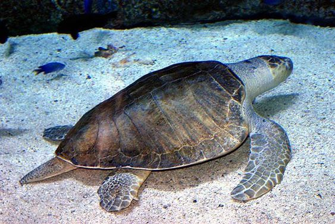

The Olive Ridley, Leatherback, Hawksbill, Loggerhead, and Green Turtles are among the seven remaining species of sea turtles on the planet.
Each year, they travel thousands of miles in search of warmer waters to lay 80 to 120 eggs at a time before making the arduous journey back
to their homes in the Pacific or Atlantic Oceans.
Given that they are present along most of Sri Lanka's coastline, you have a good possibility of spotting turtles there.
Simply keep your snorkeling equipment close to you and keep an eye out wherever you go.
But we're going to let you know some of the greatest places to go that might give you a better chance of seeing them!
In Sri Lanka, we had the best success snorkeling with turtles in Hikkaduwa, Mirissa, and Trincomalee.
We experienced the best and most frequent sightings in these locations! These are the regions where we had the best experiences; however, this isn't a guarantee for everyone.
The green turtle is one of the largest marine turtles and the sole herbivore among the numerous types. Green turtles are named for the green color of their cartilage and blubber, not their shells. The green turtle is prevalent in Sri Lankan waters. weights about 250 kg, may reach a maximum length of 1 meter and can lay between 120 and 40 eggs at a time as an adult female. Green turtles are found mostly in tropical and subtropical waters. Like other sea turtles, they move considerable distances from their hatching locations to feeding places and beaches. Classified as endangered, green turtles are threatened by overharvesting of their eggs, hunting of adults, entanglement in fishing gear, and loss of nesting sites on beaches.
The largest turtle in the world is the leatherback sea turtle. They are the only type of marine turtle that lacks hard shells and scales. They have been there since the time of the dinosaurs and get their name from their tough, rubbery skin. Some leatherbacks travel more than 10,000 kilometers annually between their rookeries and feeding grounds. They can dive to depths of about 4,000 feet, which is deeper than most marine mammals. They are exceptional divers. Of all reptile species, and arguably of all vertebrate species, leatherbacks have the greatest geographical distribution. The Atlantic, Pacific, and Indian Oceans, as well as the Mediterranean Sea, all have tropic and temperate waters where they can be found. In addition, adult leatherbacks travel as far south as New Zealand and South America and as far north as Canada and Norway.
The enormous heads of loggerhead turtles support strong jaw muscles that enable them to crush hard-shelled prey like clams and sea urchins, which is how they got their name. They are less likely to be killed for their meat or shell compared to other sea turtles. Although they frequently come into touch with fisheries, loggerhead turtles face a major problem with accidental capture of marine species in fishing gear. As their name suggests, loggerhead turtles are often red and brown in color, and their huge heads make them simple to spot! They are mostly carnivores that may reach a maximum height of 1 meter and weigh between 170 and 200 kg. Their big, powerful jaws are perfect for crushing their preferred prey, mollusks, and crustaceans.
The hawksbill sea turtle, which is found in tropical regions all over the world, is regarded by many as the most beautiful of all sea turtles because of its vibrant shell. They spend their time in lagoons, mangrove forests, marine islands, coral reefs, and rocky places. Hawksbills are so named because they can reach into the cracks and crevices of coral reefs in search of food. They have a narrow head and pointed, bird-like beaks. Their diet is quite specialized, and they eat virtually nothing except sponges. One of the smaller turtles, adults can grow to a length of 2-3 feet (roughly).
| Image | Turtle Category | Scientific Name | Average Size | Average Weight | Description |
|---|---|---|---|---|---|
| Green Turtle | Chelonia mydas | 1.2-1.5 meters | 100-200 kg | A species of big sea turtle belonging to the family Cheloniidae, the green sea turtle is also referred to as the green turtle, black turtle, or Pacific green turtle. The genus Chelonia only contains one species of it. | |
|  | Olive Ridley Turtle | Valnerable | 0.6-0.8 meters | 35-50 kg | A species of turtle in the Cheloniidae family is the olive ridley sea turtle, usually referred to as the Pacific ridley sea turtle. The species is the most prevalent and second-smallest marine turtle in the world. |
| Hawksbill Turtle | Eretmochelys imbricata | 0.9-1.2 meters | 45 - 70 kg | The Cheloniidae family of marine turtles includes the critically endangered hawksbill sea turtle. In the genus Eretmochelys, it is the sole surviving species. The species is found around the world, however its range is primarily restricted to tropical and subtropical marine and estuarine habitats. | |
| Loggerhood Turtle | Caretta caretta | 0.9-1.1 meters | 80-120 kg | The enormous heads of loggerhead turtles support strong jaw muscles that enable them to crush hard-shelled prey like clams and sea urchins, hence the name of the species. Compared to other sea turtles, they are less likely to be killed for their meat or shell. | |
| Leatherback Turtle | Dermochelys coriacea | 1.8-2.2 meters | 250-700 kg | The largest turtle in the world is the leatherback sea turtle. Only this particular species of sea turtle has a soft shell and no scales. They have been there since the time of the dinosaurs and get their name from their tough, rubbery skin. Highly migratory, leatherbacks can travel over 10,000 kilometers annually between their breeding and feeding areas. |